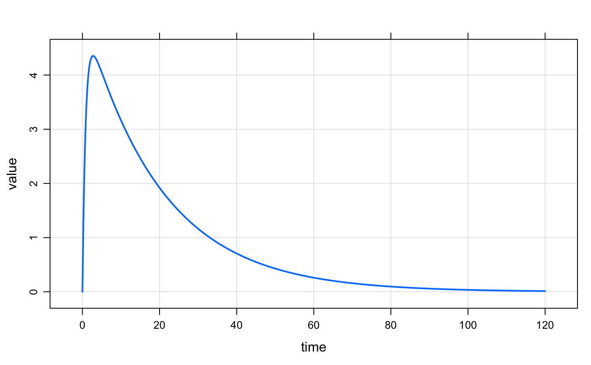
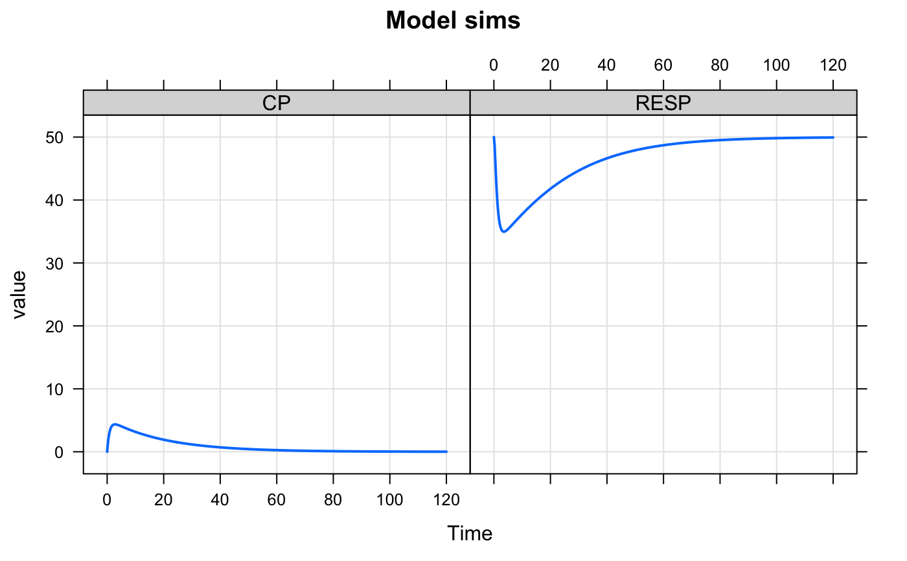

These methods help the user view simulation output and extract
simulated data to work with further. The methods listed here
for the most part have generics defined by R or other R packages.
See the seealso section for other methods defined
by mrgsolve that have their own documentation pages.
# S4 method for mrgsims $(x, name) # S4 method for mrgsims tail(x, ...) # S4 method for mrgsims head(x, ...) # S4 method for mrgsims dim(x) # S4 method for mrgsims names(x) # S4 method for mrgsims as.data.frame(x, row.names = NULL, optional = FALSE, ...) # S4 method for mrgsims as.matrix(x, ...) # S4 method for mrgsims subset(x, ...) # S4 method for mrgsims summary(object, ...) # S4 method for mrgsims show(object)
Arguments
| x | mrgsims object |
|---|---|
| name | name of column of simulated output to retain |
| ... | passed to other functions |
| row.names | passed to |
| optional | passed to |
| object | passed to show |
Details
Most methods should behave as expected according to other method commonly used in R (e.g. head, tail, as.data.frame, etc ...)
subsetcoreces simulated output to data.frame and passes to subset.data.frame$selects a column in the simulated data and returns numericheadseehead.matrix; returns simulated datatailseetail.matrix; returns simulated datadim,nrow,ncolreturns dimensions, number of rows, and number of columns in simulated dataas.data.framecoreces simulated data to data.frame and returns the data.frameas.matrixreturns matrix of simulated dataas.tblcoreces simulated totbl_df; requiresdplyrsummarycoreces simulated data to data.frame and passes tosummary.data.frameplotplots simulated data; seeplot_mrgsims
See also
Examples
#> [1] "mrgsims" #> attr(,"package") #> [1] "mrgsolve"out#> Model: housemodel #> Dim: 481 x 7 #> Time: 0 to 120 #> ID: 1 #> ID time GUT CENT RESP DV CP #> [1,] 1 0.00 100.00 0.00 50.00 0.000 0.000 #> [2,] 1 0.25 74.08 25.75 48.68 1.287 1.287 #> [3,] 1 0.50 54.88 44.50 46.18 2.225 2.225 #> [4,] 1 0.75 40.66 58.08 43.61 2.904 2.904 #> [5,] 1 1.00 30.12 67.83 41.38 3.391 3.391 #> [6,] 1 1.25 22.31 74.74 39.58 3.737 3.737 #> [7,] 1 1.50 16.53 79.56 38.18 3.978 3.978 #> [8,] 1 1.75 12.25 82.83 37.14 4.141 4.141head(out)#> ID time GUT CENT RESP DV CP #> 1 1 0.00 100.00000 0.00000 50.00000 0.000000 0.000000 #> 2 1 0.25 74.08182 25.74883 48.68223 1.287441 1.287441 #> 3 1 0.50 54.88116 44.50417 46.18005 2.225208 2.225208 #> 4 1 0.75 40.65697 58.08258 43.61333 2.904129 2.904129 #> 5 1 1.00 30.11942 67.82976 41.37943 3.391488 3.391488 #> 6 1 1.25 22.31302 74.74256 39.57649 3.737128 3.737128tail(out)#> Model: housemodel#> ID time GUT CENT RESP DV CP #> 476 1 118.75 9.202240e-44 0.2753340 49.92950 0.01376670 0.01376670 #> 477 1 119.00 5.342789e-44 0.2719137 49.93038 0.01359569 0.01359569 #> 478 1 119.25 2.453278e-44 0.2685360 49.93124 0.01342680 0.01342680 #> 479 1 119.50 2.498865e-44 0.2652002 49.93209 0.01326001 0.01326001 #> 480 1 119.75 1.869677e-44 0.2619058 49.93293 0.01309529 0.01309529 #> 481 1 120.00 1.163038e-44 0.2586523 49.93377 0.01293262 0.01293262#> #> #> -------- mrgsolve model object (unix) -------- #> Project: /Users/kyleb/git...e/pkg/project #> source: housemodel.cpp #> shared object: mrgsolve #> #> Time: start: 0 end: 120 delta: 0.25 #> > add: <none> #> > tscale: 1 #> #> Compartments: GUT CENT RESP [3] #> Parameters: CL VC KA F1 WT SEX #> > WTCL WTVC SEXCL SEXVC KIN KOUT #> > IC50 [13] #> Omega: 4x4 #> Sigma: 1x1 #> #> Solver: atol: 1e-08 rtol: 1e-08 #> > maxsteps: 2000 hmin: 0 hmax: 0 #>dim(out)#> [1] 481 7names(out)#> [1] "ID" "time" "GUT" "CENT" "RESP" "DV" "CP"mat <- as.matrix(out) df <- as.data.frame(out) df <- subset(out, time < 12) ## a data frame out$CP#> [1] 0.00000000 1.28744129 2.22520840 2.90412917 3.39148807 3.73712819 #> [7] 3.97797182 4.14136927 4.24757982 4.31160957 4.34457305 4.35470182 #> [13] 4.34809176 4.32925658 4.30153797 4.26740933 4.22870090 4.18676645 #> [19] 4.14260681 4.09696135 4.05037581 4.00325248 3.95588742 3.90849799 #> [25] 3.86124331 3.81423936 3.76757018 3.72129619 3.67546029 3.63009249 #> [31] 3.58521323 3.54083588 3.49696861 3.45361577 3.41077886 3.36845734 #> [37] 3.32664914 3.28535111 3.24455927 3.20426913 3.16447573 3.12517389 #> [43] 3.08635822 3.04802320 3.01016327 2.97277280 2.93584619 2.89937783 #> [49] 2.86336215 2.82779361 2.79266673 2.75797606 2.72371622 2.68988189 #> [55] 2.65646780 2.62346875 2.59087958 2.55869522 2.52691065 2.49552090 #> [61] 2.46452107 2.43390631 2.40367186 2.37381298 2.34432501 2.31520334 #> [67] 2.28644343 2.25804077 2.22999094 2.20228955 2.17493227 2.14791483 #> [73] 2.12123300 2.09488263 2.06885958 2.04315979 2.01777925 1.99271399 #> [79] 1.96796010 1.94351371 1.91937100 1.89552819 1.87198156 1.84872743 #> [85] 1.82576217 1.80308219 1.78068394 1.75856393 1.73671869 1.71514483 #> [91] 1.69383896 1.67279775 1.65201792 1.63149623 1.61122946 1.59121444 #> [97] 1.57144806 1.55192722 1.53264887 1.51360999 1.49480763 1.47623883 #> [103] 1.45790070 1.43979037 1.42190501 1.40424182 1.38679805 1.36957097 #> [109] 1.35255788 1.33575613 1.31916310 1.30277620 1.28659285 1.27061054 #> [115] 1.25482676 1.23923904 1.22384497 1.20864213 1.19362814 1.17880065 #> [121] 1.16415735 1.14969596 1.13541421 1.12130987 1.10738074 1.09362463 #> [127] 1.08003941 1.06662295 1.05337314 1.04028793 1.02736526 1.01460312 #> [133] 1.00199952 0.98955248 0.97726006 0.96512034 0.95313142 0.94129144 #> [139] 0.92959853 0.91805087 0.90664666 0.89538412 0.88426148 0.87327700 #> [145] 0.86242899 0.85171572 0.84113554 0.83068679 0.82036783 0.81017706 #> [151] 0.80011287 0.79017371 0.78035801 0.77066425 0.76109090 0.75163648 #> [157] 0.74229948 0.73307851 0.72397206 0.71497874 0.70609713 0.69732585 #> [163] 0.68866353 0.68010882 0.67166037 0.66331687 0.65507702 0.64693952 #> [169] 0.63890311 0.63096653 0.62312854 0.61538791 0.60774343 0.60019392 #> [175] 0.59273819 0.58537508 0.57810343 0.57092212 0.56383000 0.55682600 #> [181] 0.54990900 0.54307792 0.53633170 0.52966928 0.52308962 0.51659170 #> [187] 0.51017449 0.50383700 0.49757824 0.49139722 0.48529299 0.47926458 #> [193] 0.47331106 0.46743150 0.46162497 0.45589057 0.45022741 0.44463459 #> [199] 0.43911125 0.43365652 0.42826954 0.42294950 0.41769554 0.41250684 #> [205] 0.40738260 0.40232202 0.39732429 0.39238865 0.38751432 0.38270054 #> [211] 0.37794656 0.37325163 0.36861503 0.36403602 0.35951389 0.35504794 #> [217] 0.35063746 0.34628177 0.34198019 0.33773204 0.33353666 0.32939341 #> [223] 0.32530162 0.32126065 0.31726989 0.31332870 0.30943647 0.30559259 #> [229] 0.30179645 0.29804748 0.29434507 0.29068866 0.28707767 0.28351153 #> [235] 0.27998969 0.27651161 0.27307672 0.26968451 0.26633444 0.26302598 #> [241] 0.25975862 0.25653184 0.25334515 0.25019805 0.24709004 0.24402064 #> [247] 0.24098937 0.23799575 0.23503932 0.23211961 0.22923617 0.22638856 #> [253] 0.22357631 0.22079900 0.21805619 0.21534746 0.21267237 0.21003051 #> [259] 0.20742147 0.20484484 0.20230021 0.19978720 0.19730540 0.19485443 #> [265] 0.19243391 0.19004346 0.18768270 0.18535127 0.18304880 0.18077493 #> [271] 0.17852931 0.17631158 0.17412141 0.17195844 0.16982233 0.16771277 #> [277] 0.16562941 0.16357193 0.16154000 0.15953332 0.15755156 0.15559443 #> [283] 0.15366160 0.15175279 0.14986768 0.14800600 0.14616744 0.14435172 #> [289] 0.14255855 0.14078766 0.13903877 0.13731160 0.13560589 0.13392136 #> [295] 0.13225777 0.13061483 0.12899231 0.12738994 0.12580748 0.12424467 #> [301] 0.12270128 0.12117706 0.11967177 0.11818519 0.11671707 0.11526718 #> [307] 0.11383531 0.11242123 0.11102471 0.10964554 0.10828350 0.10693838 #> [313] 0.10560997 0.10429806 0.10300245 0.10172293 0.10045931 0.09921138 #> [319] 0.09797896 0.09676185 0.09555985 0.09437279 0.09320047 0.09204271 #> [325] 0.09089934 0.08977017 0.08865503 0.08755374 0.08646613 0.08539203 #> [331] 0.08433127 0.08328369 0.08224913 0.08122741 0.08021839 0.07922190 #> [337] 0.07823779 0.07726590 0.07630609 0.07535820 0.07442209 0.07349760 #> [343] 0.07258460 0.07168294 0.07079248 0.06991308 0.06904460 0.06818692 #> [349] 0.06733989 0.06650338 0.06567726 0.06486140 0.06405568 0.06325997 #> [355] 0.06247414 0.06169808 0.06093165 0.06017475 0.05942724 0.05868903 #> [361] 0.05795998 0.05723999 0.05652894 0.05582673 0.05513324 0.05444836 #> [367] 0.05377199 0.05310403 0.05244436 0.05179288 0.05114950 0.05051411 #> [373] 0.04988661 0.04926691 0.04865491 0.04805051 0.04745362 0.04686414 #> [379] 0.04628198 0.04570706 0.04513927 0.04457855 0.04402478 0.04347790 #> [385] 0.04293781 0.04240442 0.04187767 0.04135746 0.04084370 0.04033634 #> [391] 0.03983527 0.03934043 0.03885173 0.03836911 0.03789248 0.03742177 #> [397] 0.03695691 0.03649783 0.03604444 0.03559669 0.03515450 0.03471781 #> [403] 0.03428654 0.03386062 0.03344000 0.03302460 0.03261436 0.03220922 #> [409] 0.03180911 0.03141397 0.03102374 0.03063836 0.03025776 0.02988189 #> [415] 0.02951069 0.02914411 0.02878207 0.02842454 0.02807144 0.02772273 #> [421] 0.02737835 0.02703825 0.02670238 0.02637068 0.02604310 0.02571958 #> [427] 0.02540009 0.02508456 0.02477296 0.02446522 0.02416131 0.02386118 #> [433] 0.02356477 0.02327204 0.02298295 0.02269745 0.02241550 0.02213705 #> [439] 0.02186206 0.02159048 0.02132228 0.02105741 0.02079583 0.02053750 #> [445] 0.02028238 0.02003043 0.01978161 0.01953588 0.01929320 0.01905354 #> [451] 0.01881685 0.01858310 0.01835226 0.01812428 0.01789914 0.01767679 #> [457] 0.01745721 0.01724035 0.01702619 0.01681469 0.01660581 0.01639953 #> [463] 0.01619581 0.01599462 0.01579594 0.01559971 0.01540593 0.01521456 #> [469] 0.01502556 0.01483891 0.01465458 0.01447253 0.01429275 0.01411521 #> [475] 0.01393986 0.01376670 0.01359569 0.01342680 0.01326001 0.01309529 #> [481] 0.01293262plot(out)plot(out, CP~.)plot(out, CP+RESP~time, scales="same", xlab="Time", main="Model sims")